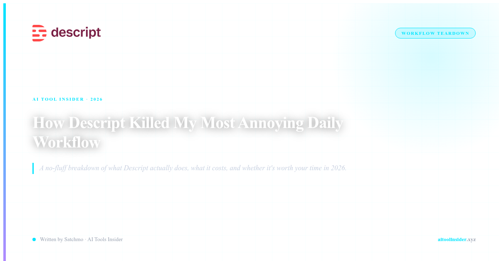

THE OLD WAY: DRAGGING CLIPS LIKE A CHIMP
Let me tell you about my video editing workflow in 2024. I had a 30-minute podcast episode. I wanted to cut out the 45 seconds where I went on a tangent about my cat. Simple task, right?
So I opened Premiere Pro. I found the timestamp. I split the clip. I selected the middle section. I deleted it. Then I had to bridge the gap. So I moved the remaining clips together. Then I realized the audio didn't match the video. So I had to slip the audio. Then the transitions were all wrong. Then I spent 20 minutes trying to find where the audio got out of sync.
This was a 30-second edit that took me 45 minutes. And that's when I realized: the timeline-based editing workflow is fundamentally broken for content creators who just want to make videos, not become video editors.
Then I found Descript. And everything changed.
Try Descript Free →WHAT DESCRIPT ACTUALLY REPLACES
Here's the workflow I was dealing with before Descript:
- Timeline manipulation: Splitting, trimming, slipping, sliding — all the jargon and mouse-work that has nothing to do with your actual content
- Keyboard shortcut memorization: Learning 50 shortcuts to do basic edits that should take one click
- Gap bridging: When you delete a section, everything else doesn't line up automatically. You have to manually move everything.
- Audio-video sync issues: When you move clips, audio and video desync. Then you spend 20 minutes fixing what should be automatic
- Export quality guessing: You don't know what settings to use. You just click "export" and hope it doesn't look like garbage
Descript replaces ALL of that with one simple concept: edit your video the same way you'd edit a Google Doc.
It's loaded with automated design tools, plus the friendliest timeline editor you've ever seen, a built-in recorder, and hosted publishing that makes getting your content out there effortless. — G2 Review
THE TEXT-BASED EDITING WORKFLOW
Here's how Descript actually works. You upload your video. Descript transcribes it automatically. Then you see your video as a document. Every word is timestamped.
Want to delete that 45-second tangent about your cat? Just delete the text. The video deletes with it. The rest of your video automatically bridges together. No timeline. No splitting. No bridging. Just delete the words and the video does what you'd expect.
That's the workflow replacement. It's not a feature. It's a complete rethinking of what video editing should be.
- Edit by editing text: The transcript IS your timeline. Cut the words, cut the video.
- Automatic transcription: 100+ languages, accurate timestamps, speaker identification
- AI-powered filler word removal: One click removes all your "ums" and "uhs"
- Instant captions: Auto-generated, editable, downloadable in any format
- Studio Sound: AI noise removal and audio enhancement built in
- Templates: Professional video templates so you don't need design skills
The G2 review was right — it's the friendliest editor you'll ever see. Because you don't need to learn an editor. You just need to know how to edit text.
See Current Pricing for Descript →WHAT ABOUT THE CONS?
I'll be honest about what I found:
- Video compression: One eesel.ai review noted "significant video compression and limited control over export settings." If you're a professional videographer needing specific bitrates, this is a limitation.
- Recording bugs exist: One Reddit user posted: "Issue with recording in Descript after years of no issues" on r/podcasting. Tech issues happen.
- Not for complex projects: If you need multi-camera editing, color grading, or motion graphics, you'll still need Premiere or DaVinci Resolve
- Internet required: Descript is cloud-based. No offline editing
But here's the thing: if you're a content creator who wants to make videos without becoming a video editor, none of those cons matter. You're not a professional videographer. You're a podcaster, YouTuber, or marketer who needs to get content out fast.
WHO THIS IS ACTUALLY FOR
Descript makes sense if:
- You make podcasts: The audio editing alone is worth the price. Transcription + editing + publishing in one tool.
- You make YouTube videos: Especially talking-head videos, tutorials, or screen recordings. The text-based editing is perfect.
- You make social media content: Quick clips, repurposed content, captions — all handled automatically.
- You hate video editing: If you've ever struggled with Premiere, DaVinci, or Final Cut, Descript is your escape.
- You want speed: I can edit a 30-minute podcast in 15 minutes with Descript. In Premiere it took 2 hours.
THE BOTTOM LINE
The timeline-based editing workflow is a relic. It was designed for film studios with editing teams, not solo content creators who just want to make videos.
Descript realized that most video editing is just cutting out the parts you don't want. And you don't need a timeline to do that. You just need to delete the stuff you don't need and have the rest automatically come together.
The free tier gives you unlimited projects with basic features. The $16/month Creator plan adds AI features and better exports. For most content creators, that's worth it. The time you save on editing alone pays for the subscription in the first month.
I stopped fighting with timelines. You can too.
Claim Your Descript Deal →